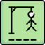

Blackjack (JAVASCRIPT) - Jogue Blackjack ou Vinte-e-um: Um jogo praticado com cartas em casinos e que pode ser jogado com 1 a 8 baralhos de 52 cartas, em que o objetivo é ter mais pontos do que o adversário, mas sem ultrapassar os 21.
Criptografia e descriptografia (HTML, CSS e JAVASCRIPT) - Converta sua mensagem em uma mensagem indescritível e depois recupere sua mensagem original com esse projeto.
Jogo da Forca (HTML, CSS e JAVASCRIPT) - Jogue o clássico jogo da forca com CSS responsivo (para desktop, mobile ou qualquer outro aparelho eletrônico).